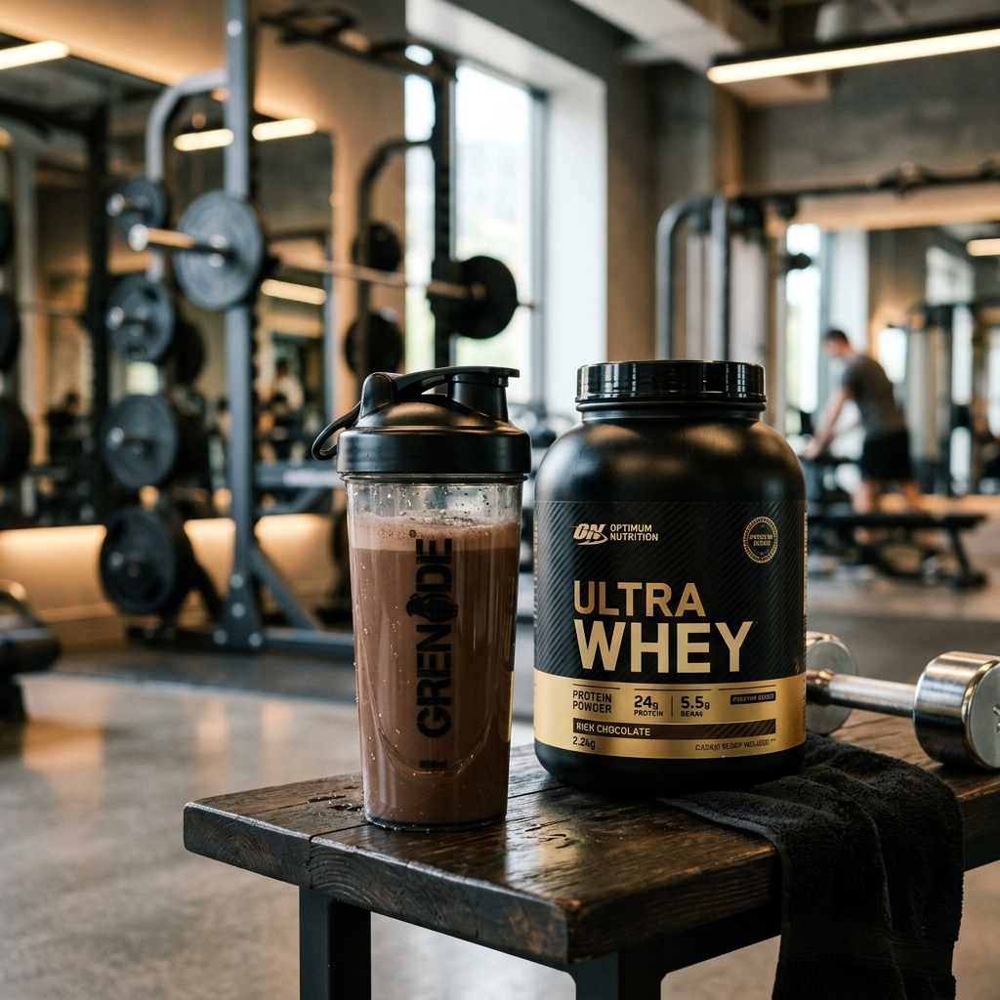

Whey Protein: Muito Além da Academia e Hipertrofia

Pin ItO **Whey Protein** é a proteína extraída do soro do leite de alta qualidade biológica. Embora seja extremamente popular entre fisiculturistas e frequentadores de academia, este suplemento é, na verdade, uma ferramenta poderosa para a manutenção da saúde geral, recuperação de tecidos e longevidade muscular.
Seja para ganhar massa magra, emagrecer ou garantir a ingestão proteica diária em dietas vegetarianas, o Whey Protein é um dos aliados mais práticos e versáteis que existem.
A Síntese Proteica e Recuperação
O Whey contém todos os aminoácidos essenciais, incluindo a **Leucina**, que é o gatilho principal para a construção muscular (síntese proteica). Consumir Whey após o exercício acelera a reparação dos tecidos e reduz significativamente a dor muscular tardia.
Recuperação Pós-Treino
Absorção ultra-rápida que entrega aminoácidos aos músculos no momento em que eles mais precisam.
Controle de Apetite
As proteínas promovem maior saciedade, ajudando a controlar a fome entre as refeições e auxiliando no emagrecimento.
Saúde Imunológica
Contém imunoglobulinas e lactoferrina, que ajudam a fortalecer o sistema de defesa do corpo.
Diferenças entre Isolado, Concentrado e Hidrolisado
Para escolher o melhor para o seu bolso e seu objetivo, entenda as diferenças:
- Whey Concentrado: É a opção com melhor custo-benefício. Contém pequenas quantidades de lactose e gordura, sendo ideal para a maioria das pessoas.
- Whey Isolado: Passa por um processo de filtragem rigoroso que remove quase toda a lactose e gordura. É a escolha para intolerantes ou dietas restritivas.
- Whey Hidrolisado: É a proteína "pré-digerida", com a absorção mais rápida de todas. Indicada para atletas de elite ou pessoas com digestão sensível.
🥤 Dica de Ouro: Como Consumir?
O Whey pode ser misturado com água, leite ou batido com frutas para criar um lanche nutritivo. Ver na Shopee
Perguntas Frequentes (FAQ)
1. Whey Protein engorda?
Não. O Whey é apenas uma fonte de proteína. O que determina o ganho de peso é o total de calorias que você consome no dia. Na verdade, ele ajuda muito na perda de gordura por preservar os músculos.
2. Só quem treina pode tomar?
Não! Idosos que perdem massa muscular rapidamente (sarcopenia) e pessoas com rotinas corridas que não conseguem comer proteína suficiente nas refeições podem se beneficiar muito.